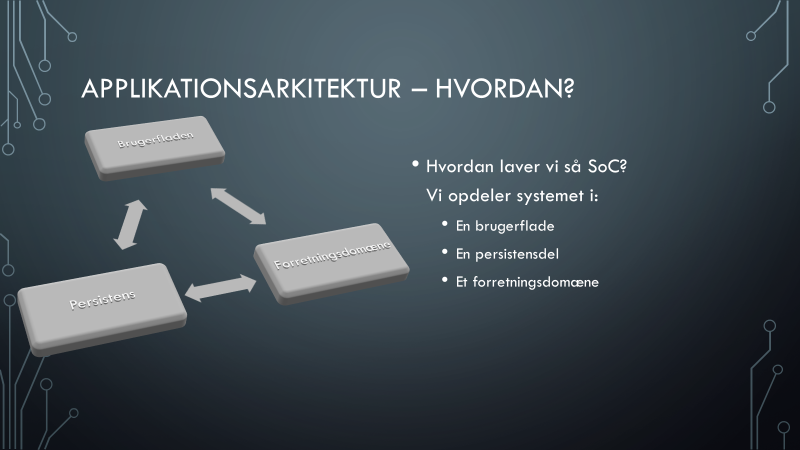
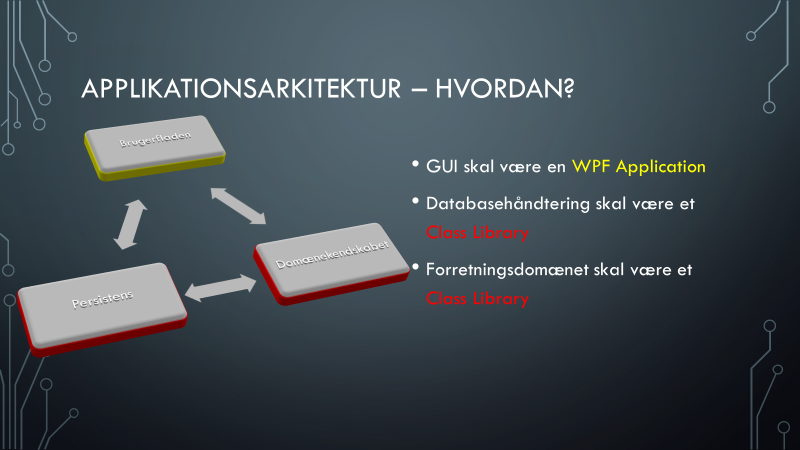
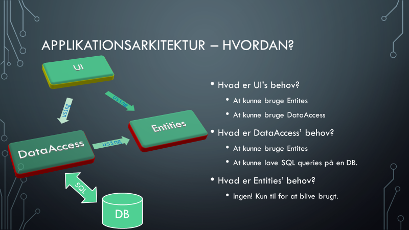

Det er hensigtsmæssigt at anvende følgende arkitektur i en solution, der har en brugergrænseflade med databaseadgang:
Der kan være flere projekter ud over disse. Projekterne referer til hinanden på følgende måde:
Projektet med et entry point (f.eks. Main metoden) har referencer til projektet med domænemodellen og til projektet med databaseadgang. Projektet med databaseadgang har reference til projektet med domænemodellen. Lad os kigge nærmere på disse Separations of Concerns (SoC):
Som vi ser på figuren opdeles systemet i tre dele. Lad os se på hvordan vi virkeliggør dette i Visual Studio:
På figuren vises to klassebiblioteker (røde) der har til formål at understøtte selve applikationen (gul). Nu skal vi se på hvordan projekterne skal referere til hinanden:
Bemærk hvordan pilene mellem projekterne nu kun peger én vej. Dette er referencerne mellem projekterne, og se at der også er et using statement inden i pilene. Der er også tilføjet en database.
Du finder et eksempel på en sådan arkitektur på: github.com/mads-mikkel/S3.Northwind.